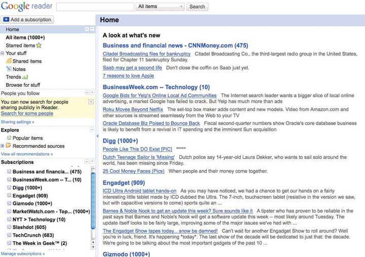
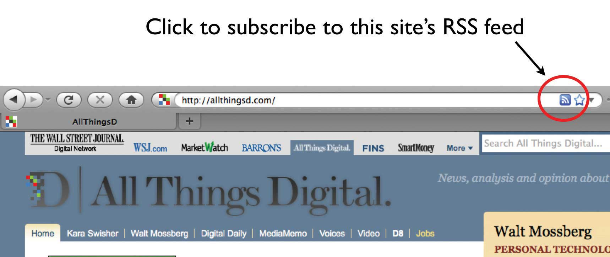

After studying this section you should be able to do the following:
Over the past few years a fundamentally different class of Internet services has attracted users, made headlines, and increasingly garnered breathtaking market valuations. Often referred to under the umbrella term “Web 2.0A term broadly referring to Internet services that foster collaboration and information sharing; characteristics that distinctly set “Web 2.0” efforts apart from the static, transaction-oriented Web sites of “Web 1.0.” The term is often applied to Web sites and Internet services that foster social media or other sorts of peer production.,” these new services are targeted at harnessing the power of the Internet to empower users to collaborate, create resources, and share information in a distinctly different way from the static Web sites and transaction-focused storefronts that characterized so many failures in the dot-com bubble. Blogs, wikis, social networks, photo and video sharing sites, and tagging systems all fall under the Web 2.0 moniker, as do a host of supporting technologies and related efforts.
The term Web 2.0 is a tricky one because like so many popular technology terms there’s not a precise definition. Coined by publisher and pundit Tim O’Reilly in 2003, techies often joust over the breadth of the Web 2.0 umbrella and over whether Web 2.0 is something new or simply an extension of technologies that have existed since the creation of the Internet. These arguments aren’t really all that important. What is significant is how quickly the Web 2.0 revolution came about, how unexpected it was, and how deeply impactful these efforts have become. Some of the sites and services that have evolved and their Web 1.0 origins are listed in Table 6.1 "Web 1.0 versus Web 2.0".Adapted from T. O’Reilly, “What Is Web 2.0?” O’Reilly, September 30, 2005.
Table 6.1 Web 1.0 versus Web 2.0
| Web 1.0 | Web 2.0 | |
|---|---|---|
| DoubleClick | → | Google AdSense |
| Ofoto | → | Flickr |
| Akamai | → | BitTorrent |
| mp3.com | → | Napster |
| Britannica Online | → | Wikipedia |
| personal Web sites | → | blogging |
| evite | → | upcoming.org and E.V.D.B. |
| domain name speculation | → | search engine optimization |
| page views | → | cost per click |
| screen scraping | → | Web services |
| publishing | → | participation |
| content management systems | → | wikis |
| directories (taxonomy) | → | tagging (“folksonomy”) |
| stickiness | → | syndication |
| instant messaging | → | |
| Monster.com | → |
To underscore the speed with which Web 2.0 arrived on the scene, and the impact of leading Web 2.0 services, consider the following efforts:
Table 6.2 Major Web 2.0 Tools
| Description | Features | Technology Providers | Use Case Examples | |
|---|---|---|---|---|
| Blogs | Short for “Web log”—an online diary that keeps a running chronology of entries. Readers can comment on posts. Can connect to other blogs through blog rolls or trackbacks. Key uses: Share ideas, obtain feedback, mobilize a community. |
|
|
Corporate Users:
|
| Wikis | A Web site that anyone can edit directly from within the browser. Key uses: Collaborate on common tasks or to create a common knowledge base. |
|
|
Corporate Users:
|
| Electronic Social Network | Online community that allows users to establish a personal profile, link to other profiles (i.e., friends), and browse the connections of other, and communicate with members via messaging, posts, et cetera.
Key Uses:
|
|
|
Corporate Users:
|
| Microblogging | Short, asynchronous messaging system. Users send messages to “followers.” Key Uses: distributing time, sensitive information, sharing opinions, virally spreading ideas, running contests and promotions, soliciting feedback, providing customer support, tracking commentary on firms/products/issues, organizing protests. |
|
|
Corporate Users:
|
Millions of users, billions of dollars, huge social impact, and these efforts weren’t even on the radar of most business professionals when today’s graduating college seniors first enrolled as freshmen. The trend demonstrates that even some of the world’s preeminent thought leaders and business publications can be sideswiped by the speed of the Internet.
Consider that when management guru Michael Porter wrote a piece titled, “Strategy and the Internet” at the end of the dot-com bubble, he lamented the high cost of building brand online, questioned the power of network effects, and cast a skeptical eye on ad-supported revenue models. Well, it turns out Web 2.0 efforts challenged all of these assumptions. Among the efforts above, all built brand on the cheap with little conventional advertising, and each owes their hypergrowth and high valuation to their ability to harness the network effect. In June, 2008, BusinessWeek also confessed to having an eye off the ball. In a cover story on social media, the magazine offered a mea culpa, confessing that while blogging was on their radar, editors were blind to the bigger trends afoot online, and underestimated the rise and influence of social networks, wikis, and other efforts.Stephen Baker and Heather Green, “Beyond Blogs: What Every Business Needs to Know,” BusinessWeek, June 2, 2008.
While the Web 2.0 moniker is a murky one, we’ll add some precision to our discussion of these efforts by focusing on peer productionWhen users collaboratively work to create content and provide services online. Includes social media sites, as well as peer-produced services, such as Skype and BitTorrent, where the participation of users provide the infrastructure and computational resources that enable the service., perhaps Web 2.0’s most powerful feature, where users work, often collaboratively, to create content and provide services online. Web-based efforts that foster peer production are often referred to as social mediaContent that is created, shared, and commented on by a broader community of users. Services that support the production and sharing of social media include blogs, wikis, video sites like YouTube, and most social networks. or user-generated content sites. These sites include blogs; wikis; social networks like Facebook and MySpace; communal bookmarking and tagging sites like Del.icio.us; media sharing sites like YouTube and Flickr; and a host of supporting technologies. And it’s not just about media. Peer-produced services like Skype and BitTorrent leverage users’ computers instead of a central IT resource to forward phone calls and video. This ability saves their sponsors the substantial cost of servers, storage, and bandwidth. Techniques such as crowdsourcing, where initially undefined groups of users band together to solve problems, create code, and develop services, are also a type of peer production. These efforts will be expanded on below, along with several examples of their use and impact.
After studying this section you should be able to do the following:
BlogsOnline journal entries, usually made in a reverse chronological order. Blogs typically provide comment mechanisms where users can post feedback for authors and other readers. (short for Web logs) first emerged almost a decade ago as a medium for posting online diaries. (In a perhaps apocryphal story, Wired magazine claimed the term “Web log” was coined by Jorn Barger, a sometimes homeless, yet profoundly prolific, Internet poster). From humble beginnings, the blogging phenomenon has grown to a point where the number of public blogs tracked by Technorati (the popular blog index) has surpassed one hundred million.D. Takahashi, “Technorati Releases Data on State of the Blogosphere: Bloggers of the World Have United,” VentureBeat, September 28, 2008. This number is clearly a long tailIn this context, refers to an extremely large selection of content or products. The long tail is a phenomenon whereby firms can make money by offering a near-limitless selection. phenomenon, loaded with niche content that remains “discoverable” through search engines and blog indexes. TrackbacksLinks in a blog post that refer eaders back to cited sources. Trackbacks allow a blogger to see which and how many other bloggers are referring to their content. A “trackback” field is supported by most blog software and while it’s not required to enter a trackback when citing another post, it’s considered good “netiquette” to do so. (third-party links back to original blog post), and blog rollsA list of a blogger’s favorite blogs. While not all blogs include blog rolls, those that do are often displayed on the right or left column of a blog’s main page. (a list of a blogger’s favorite sites—a sort of shout-out to blogging peers) also help distinguish and reinforce the reputation of widely read blogs.
The most popular blogs offer cutting-edge news and commentary, with postings running the gamut from professional publications to personal diaries. While this cacophony of content was once dismissed, blogging is now a respected and influential medium. Consider that the political blog The Huffington Post is now more popular than all but eight newspaper sites and has a valuation higher than many publicly traded papers.E. Alterman, “Out of Print, the Death and Life of the American Newspaper,” New Yorker, March 31, 2008; and M. Learmonth, “Huffington Post More Valuable Than Some Newspaper Cos.,” DigitalNext, December 1, 2008. Keep in mind that this is a site without the sports, local news, weather, and other content offered by most papers. Ratings like this are hard to achieve—most bloggers can’t make a living off their musings. But among the elite ranks, killer subscriber numbers are a magnet for advertisers. Top blogs operating on shoestring budgets can snare several hundred thousand dollars a month in ad revenue.S. Zuckerman, “Yes, Some Blogs Are Profitable—Very Profitable,” San Francisco Chronicle, October 21, 2007. Most start with ad networks like Google AdSense, but the most elite engage advertisers directly for high-value deals and extended sponsorships.
Top blogs have begun to attract well-known journalists away from print media. The Huffington Post hired a former Washington Post editor Lawrence Roberts to head the site’s investigative unit. The popular blog TechCrunch hired Erick Schonfeld away from Time Warner’s business publishing empire, while Schonfeld’s cohort Om Malik founded another highly ranked tech industry blog, GigaOM. And sometimes this drift flows the other direction. Robert Scoble, a blogger who made his reputation as the informal online voice for Microsoft, was hired to run social media at Fast Company magazine.
Senior executives from many industries have also begun to weigh in with online ruminations, going directly to the people without a journalist filtering their comments. Sun Microsystem’s Jonathan Schwartz, GM’s Bob Lutz, and Paul Levy (CEO of healthcare quality leader Beth Israel Deaconess Medical Center) use their blogs for purposes that include a combination of marketing, sharing ideas, gathering feedback, press response, and image shaping. Blogs have the luxury of being more topically focused than traditional media, with no limits on page size, word count, or publication deadline. Some of the best examples engage new developments in topic domains much more quickly and deeply than traditional media. For example, it’s not uncommon for blogs focused on the law or politics to provide a detailed dissection of a Supreme Court opinion within hours of its release—offering analysis well ahead of, and with greater depth, than via what bloggers call the mainstream media (MSM)Refers to newspapers, magazine, television, and radio. The MSM is distinctly different from Internet media such as blogs.. As such, it’s not surprising that most mainstream news outlets have begun supplementing their content with blogs that can offer greater depth, more detail, and deadline-free timeliness.
While the feature set of a particular blog depends on the underlying platform and the preferences of the blogger, several key features are common to most blogs:
The voice of the blogosphereA term referring to the collective community of bloggers, as well as those who read and comment on blogs. can wield significant influence. Examples include leading the charge for Dan Rather’s resignation and prompting the design of a new insulin pump. In an example of what can happen when a firm ignores social media, consider the flare-up Ingersoll Rand faced when the online community exposed a design flaw in its Kryptonite bike lock.
Online posts showed the thick metal lock could be broken with a simple ball-point pen. A video showing the hack was posted online. When Ingersoll Rand failed to react quickly, the blogosphere erupted with criticism. Just days after online reports appeared, the mainstream media picked up the story. The New York Times ran a story titled “The Pen Is Mightier Than the Lock” that included a series of photos demonstrating the ballpoint Kryptonite lock pick. The event tarnished the once-strong brand and eventually resulted in a loss of over ten million dollars.
Concern over managing a firm’s online reputation by monitoring blog posts and other social media commentary has led to the rise of an industry known as online reputation managementThe process of tracking and responding to online mentions of a product, organization, or individual. Services supporting online reputation management range from free Google Alerts to more sophisticated services that blend computer-based and human monitoring of multiple media channels.. Firms specializing in this field will track a client firm’s name, brand, executive names, or other keywords and report online activity and whether it is positive or negative
Like any Web page, blogs can be public, tucked behind a corporate firewall, or password protected. Most blogs offer a two-way dialog, allowing users to comment on posts (sort of instant “letters to the editor,” posted online and delivered directly to the author). The running dialog can read like an electronic bulletin board, and can be an effective way to gather opinion when vetting ideas. Just as important, user comments help keep a blogger honest. Just as the “wisdom of crowds” keeps Wikipedia accurate, a vigorous community of commenters will quickly expose a blogger’s errors of fact or logic.
Despite this increased popularity, blogging has its downside. Blog comments can be a hothouse for spam and the disgruntled. Ham-handed corporate efforts (such as poor response to public criticism or bogus “praise posts”) have been ridiculed. Employee blogging can be difficult to control and public postings can “live” forever in the bowels of an Internet search engine or as content pasted on other Web sites. Many firms have employee blogging and broader Internet posting policies to guide online conduct that may be linked to the firm. Bloggers beware—there are dozens of examples of workers who have been fired for what employers viewed as inappropriate posts.
Blogs can be hosted via third-party services (Google Blogger, WordPress.com, TypePad, Windows Live Spaces), with most offering a combination of free and premium features. Blogging features have also been incorporated into social networks such as Facebook, MySpace, and Ning, as well as wiki tools such as SocialText. Blogging software can also be run on third-party servers, allowing the developer more control in areas such as security and formatting. The most popular platform for users choosing to host their own blog server is the open source Word Press system (based on PHP and MySQL).
Blogs have become a fire hose of rapidly delivered information as tool providers have made it easier for would-be bloggers to capture and post content. For example, the Google Toolbar has a “BlogThis!” feature that allows anyone with a Google Blogger account to post links directly to their blogs. Apple ships blog hosting tools with its server products, and Microsoft offers the free LiveWriter blog editing tool and the Windows Spaces blogging service. Blogger and many social networking sites also offer easy features for posting content and photos from a mobile phone or devices like the iPod Touch.
In the end, the value of any particular blog derives from a combination of technical and social features. The technical features make it easy for a blogger and his or her community to engage in an ongoing conversation on some topic of shared interest. But the social norms and patterns of use that emerge over time in each blog are what determine whether technology features will be harnessed for good or ill. Some blogs develop norms of fairness, accuracy, proper attribution, quality writing, and good faith argumentation, and attract readers that find these norms attractive. Others mix it up with hotly contested debate, one-sided partisanship, or deliberately provocative posts, attracting a decidedly different type of discourse.
After studying this section you should be able to do the following:
A wikiA Web site that can be modified by anyone, from directly within a Web browser (provided that user is granted edit access). is a Web site anyone can edit directly within a Web browser (provided the site grants the user edit access). Wikis derive their name from the Hawaiian word for “quick.” Ward Cunningham, the “wiki father” christened this new class of software with the moniker in honor of the wiki-wiki shuttle bus at the Honolulu airport. Wikis can indeed be one of the speediest ways to collaboratively create content online. Many popular online wikis serve as a shared knowledge repository in some domain.
The largest and most popular wiki is Wikipedia, but there are hundreds of publicly accessible wikis that anyone can participate in. Each attempts to chronicle a world of knowledge within a particular domain, with examples ranging from Wine Wiki for oenophiles to Wookieepedia, the Star Wars wiki. But wikis can be used for any collaborative effort—from meeting planning to project management. And in addition to the hundreds of public wikis, there are many thousand more that are hidden away behind firewalls, used as proprietary internal tools for organizational collaboration.
Like blogs, the value of a wiki derives from both technical and social features. The technology makes it easy to create, edit, and refine content; learn when content has been changed, how and by whom; and to change content back to a prior state. But it is the social motivations of individuals (to make a contribution, to share knowledge) that allow these features to be harnessed. The larger and more active a wiki community, the more likely it is that content will be up-to-date and that errors will be quickly corrected. Several studies have shown that large community wiki entries are as or more accurate than professional publication counterparts.
Want to add to or edit a wiki entry? On most sites you just click the Edit link. Wikis support what you see is what you get (WYSIWYG)A phrase used to describe graphical editing tools, such as those found in a wiki, page layout program, or other design tool. editing that, while not as robust as traditional word processors, is still easy enough for most users to grasp without training or knowledge of arcane code or markup language. Users can make changes to existing content and can easily create new pages or articles and link them to other pages in the wiki. Wikis also provide a version history. Click the “history” link on Wikipedia, for example, and you can see when edits were made and by whom. This feature allows the community to roll backThe ability to revert a wiki page to a prior version. This is useful for restoring earlier work in the event of a posting error, inaccuracy, or vandalism. a wiki to a prior page, in the event that someone accidentally deletes key info, or intentionally defaces a page.
Vandalism is a problem on Wikipedia, but it’s more of a nuisance than a crisis. A Wired article chronicled how Wikipedia’s entry for former U.S. President Jimmy Carter was regularly replaced by a photo of a “scruffy, random unshaven man with his left index finger shoved firmly up his nose.”Daniel Pink, “The Book Stops Here,” Wired, March 2005. Nasty and inappropriate, to be sure, but the Wikipedia editorial community is now so large and so vigilant that most vandalism is caught and corrected within seconds. Watch-lists for the most active targets (say the Web pages of political figures or controversial topics) tip off the community when changes are made. The accounts of vandals can be suspended, and while mischief-makers can log in under another name, most vandals simply become discouraged and move on. It’s as if an army of do-gooders follows a graffiti tagger and immediately repaints any defacement.
As with blogs, a wiki’s features set varies depending on the specific wiki tool chosen, as well as administrator design, but most wikis support the following key features:
Wikis are available both as software (commercial as well as open source varieties) that firms can install on their own computers or as online services (both subscription or ad-supported) where content is hosted off site by third parties. Since wikis can be started without the oversight or involvement of a firm’s IT department, their appearance in organizations often comes from grassroots user initiative. Many wiki services offer additional tools such as blogs, message boards, or spreadsheets as part of their feature set, making most wikis really more full-featured platforms for social computing.
Wikis can be vital tools for collecting and leveraging knowledge that would otherwise be scattered throughout an organization; reducing geographic distance; removing boundaries between functional areas; and flattening preexisting hierarchies. Companies have used wikis in a number of ways:
When brought outside the firewall, corporate wikis can also be a sort of value-generation greenhouse, allowing organizations to leverage input from their customers and partners:
Jump-starting a wiki can be a challenge, and an underused wiki can be a ghost town of orphan, out-of-date, and inaccurate content. Fortunately, once users see the value of wikis, use and effectiveness often snowballs. The unstructured nature of wikis are also both a strength and weakness. Some organizations employ wikimastersIndividuals often employed by organizations to review community content in order to delete excessive posts, move commentary to the best location, and edit as necessary. to “garden” community content; “prune” excessive posts, “transplant” commentary to the best location, and “weed” as necessary. Often communities will quickly develop norms for organizing and maintaining content. Wikipatterns.com offers a guide to the stages of wiki adoption and a collection of community-building and content-building strategies.
Not only is the nonprofit Wikipedia, with its enthusiastic army of unpaid experts and editors, an immediate threat to the three-hundred-year-old Encyclopedia Britannica, Wikipedia entries can impact nearly all large-sized organizations. Wikipedia is the go-to, first-choice reference site for a generation of “netizens,” and Wikipedia entries are invariably one of the top links, often the first link, to appear in Internet search results.
This position means that anyone from top executives to political candidates to any firm large enough to warrant an entry has to contend with the very public commentary offered up in a Wikipedia entry. In the same way that firms monitor their online reputations in blog posts and Twitter tweets, they’ve also got to keep an eye on wikis.
But firms that overreach and try to influence an entry outside of Wikipedia’s mandated neutral point of view (NPOV)An editorial style that is free of bias and opinion. Wikipedia norms dictate that all articles must be written in NPOV., risk a backlash and public exposure. Version tracking means the wiki sees all. Users on computers at right-leaning Fox News were embarrassingly caught editing the wiki page of the lefty pundit and politician Al Franken (a nemesis of Fox’s Bill O’Reilly);A. Bergman, “Wikipedia Is Only as Anonymous as your I.P.,” O’Reilly Radar, August 14, 2007. Sony staffers were flagged as editing the entry for the Xbox game Halo 3;I. Williams, “Sony Caught Editing Halo 3 Wikipedia Entry,” Vnunet.com, September 5, 2007. and none other than Wikipedia founder Jimmy Wales was criticized for editing his own Wikipedia biography;E. Hansen, “Wikipedia Founder Edits Own Bio,” Wired, December 19, 2005. an act that some consider bad online form at best, and dishonest at worst.
One last point on using Wikipedia for research. Remember that according to its own stated policies, Wikipedia isn’t an original information source; rather, it’s a clearinghouse for verified information. So citing Wikipedia as a reference usually isn’t considered good form. Instead, seek out original (and verifiable) sources via the links at the bottom of Wikipedia entries.
After studying this section you should be able to do the following:
Social networksAn online community that allows users to establish a personal profile and communicate with others. Large public social networks include MySpace, Facebook, LinkedIn, and Google’s Orkut. have garnered increasing attention as established networks grow and innovate, new networks emerge, and value is demonstrated. MySpace signed a billion-dollar deal to carry ads from Google’s AdSense network. Meanwhile, privately held Facebook has moved beyond its college roots, and opened its network to third-party application developers. LinkedIn, which rounds out the Big Three U.S. public social networks, has grown to the point where its influence is threatening recruiting sites like Monster.com and CareerBuilder.M. Boyle, “Recruiting: Enough to Make a Monster Tremble,” BusinessWeek, June 25, 2009. It now offers services for messaging, information sharing, and even integration with the BusinessWeek Web site.
Media reports often mention MySpace, Facebook, and LinkedIn in the same sentence. However, while these networks share some common features, they serve very different purposes. MySpace pages are largely for public consumption. The site was originally started by musicians as a tool to help users discover new music and engage with bands. Today, MySpace members leverage the service to discover people with similar tastes or experiences (say fans of a comic, or sufferers of a condition).
Facebook, by contrast, is more oriented towards reinforcing existing social ties between people who already know each other. This difference leads to varying usage patterns. Since Facebook is perceived by users as relatively secure, with only invited “friends” seeing your profile, over a third of Facebook users post their mobile phone numbers on their profile pages.
LinkedIn was conceived from the start as a social network for business users. The site’s profiles act as a sort of digital Rolodex that users update as they move or change jobs. Users can pose questions to members of their network, engage in group discussions, ask for introductions through mutual contacts, and comment on others’ profiles (e.g., recommending a member).
Active members find the site invaluable for maintaining professional contacts, seeking peer advice, networking, and even recruiting. Carmen Hudson, Starbucks manager of enterprise staffing, states LinkedIn is “one of the best things for finding midlevel executives.”Rachel King, “No Rest for the Wiki,” BusinessWeek, March 12, 2007. Such networks are also putting increasing pressure on firms to work particularly hard to retain top talent. While once HR managers fiercely guarded employee directories for fear that a list of talent may fall into the hands of rivals, today’s social networks make it easy for anyone to gain a list of a firm’s staff, complete with contact information.
While these networks dominate in the United States, the network effect and cultural differences work to create islands where other social networks are favored by a particular culture or region. The first site to gain traction in a given market is usually the winner. Google’s Orkut, Bebo (now owned by AOL), and Cyworld have small U.S. followings, but are among the largest sites in Brazil, Europe, and South Korea. Research by Ipsos Insight also suggests that users in many global markets, including Brazil, South Korea, and China, are more active social networkers than their U.S. counterparts.Ipsos Insights, Online Video and Social Networking Web Sites Set to Drive the Evolution of Tomorrow’s Digital Lifestyle Globally, July 5, 2007.
Perhaps the most powerful (and controversial) feature of most social networks is the feedAn update on an individual’s activities that are broadcast to a member’s contacts or “friends.” Feeds may include activities such as posting messages, photos, or video, joining groups, or installing applications. (or newsfeed). Pioneered by Facebook but now adopted by most services, feeds provide a timely update on the activities of people or topics that an individual has an association with. Facebook feeds can give you a heads up when someone makes a friend, joins a group, posts a photo, or installs an application.
Feeds are inherently viralIn this context, information or applications that spread rapidly between users.. By seeing what others are doing on a social network, feeds can rapidly mobilize populations and dramatically spread the adoption of applications. Leveraging feeds, it took just ten days for the Facebook group Support the Monks’ Protest in Burma to amass over one hundred and sixty thousand Facebook members. Feeds also helped music app iLike garner three million Facebook users just two weeks after its launch.Sarah Lacy, Once You’re Lucky, Twice You’re Good: The Rebirth of Silicon Valley and the Rise of Web 2.0 (New York: Gotham Books, 2008); and K. Nicole, “iLike Sees Exponential Growth with Facebook App,” Mashable, June 11, 2007. Its previous Web-based effort took eight months to reach those numbers.
But feeds are also controversial. Many users react negatively to this sort of public broadcast of their online activity, and feed mismanagement can create public relations snafus, user discontent, and potentially open up a site to legal action. Facebook initially dealt with a massive user outcry at the launch of feeds, and faced a subsequent backlash when its Beacon service broadcast user purchases without first explicitly asking their permission (see Chapter 7 "Facebook: Building a Business from the Social Graph" for more details).
The foundation of a social network is the user profile, but utility goes beyond the sort of listing found in a corporate information directory. Typical features of a social network include support for the following:
The use of public social networks within private organizations is becoming widespread. Many employees have organized groups using publicly available social networking sites because similar tools are not offered by their firms. Workforce Management reported that MySpace had over forty thousand groups devoted to companies or coworkers, while Facebook had over eight thousand.Ed Frauenheim, “Social Revolution,” Workforce Management, October 2007. Assuming a large fraction of these groups are focused on internal projects, this demonstrates a clear pent up demand for corporate-centric social networks.
Many firms are choosing to meet this demand by implementing internal social network platforms that are secure and tailored to firm needs. At the most basic level, these networks have supplanted the traditional employee directory. Social network listings are easy to update and expand. Employees are encouraged to add their own photos, interests, and expertise to create a living digital identity.
Firms such as Deloitte, Dow Chemical, and Goldman Sachs have created social networks for “alumni” who have left the firm or retired. These networks can be useful in maintaining contacts for future business leads, rehiring former employees (20 percent of Deloitte’s experienced hires are so called “boomerangs,” or returning employees), or recruiting retired staff to serve as contractors when labor is tight.Rachel King, “Social Networks: Execs Use Them Too,” BusinessWeek, November 11, 2006. Maintaining such networks will be critical in industries like I.T. and health care that are likely to be plagued by worker shortages for years to come.
Social networking can also be important for organizations like IBM, where some 42 percent of employees regularly work from home or client locations. IBM’s social network makes it easier to locate employee expertise within the firm, organize virtual work groups, and communicate across large distances.W. Bulkley, “Playing Well with Others,” Wall Street Journal, June 18, 2007. As a dialogue catalyst, a social network transforms the public directory into a front of knowledge sharing that promotes organization flattening and value-adding expertise sharing.
As another example of corporate social networks, Reuters has rolled out Reuters Space, a private online community for financial professionals. Profile pages can also contain a personal blog and news feeds (from Reuters or external services). Every profile page is accessible to the entire Reuters Space community, but members can choose which personal details are available to whom. While IBM and Reuters have developed their own social network platforms, firms are increasingly turning to third-party vendors like SelectMinds (adopted by Deloitte, Dow Chemical, and Goldman Sachs) and LiveWorld (adopted by Intuit, eBay, the NBA, and Scientific American).
Firms have also created their own online communities to foster brainstorming and customer engagement. Dell’s IdeaStorm.com forum collects user feedback and is credited with prompting line offerings, such as the firm’s introduction of a Linux-based laptop.D. Greenfield, “How Companies Are Using I.T. to Spot Innovative Ideas,” InformationWeek, November 8, 2008. At MyStarbucksIdea.com, the coffee giant has leveraged user input to launch a series of innovations ranging from splash sticks that prevent spills in to-go cups, to new menu items. Both IdeaStorm and MyStarbucksIdea run on a platform offered by Salesforce.com’s that not only hosts these sites, but provides integration into Facebook and other services. This platform has allowed Starbucks to leverage Facebook to promote free coffee on election day, a free cup on inauguration day for those pledging five hours of community service, and awareness of the firm’s AIDS-related (RED) campaign. This latter effort garnered an astonishing three hundred ninety million “viral impressions,” including activities such as joining a group to support the cause, messaging others, or making wall posts.M. Brandau, “Starbucks Brews Up Spot on the List of Top Social Brands in 2008,” Nation’s Restaurant News, April 6, 2009.
As with any type of social media, content flows in social networks are difficult to control. Embarrassing disclosures can emerge from public systems or insecure internal networks. Employees embracing a culture of digital sharing may err and release confidential or proprietary information. Networks could serve as a focal point for the disgruntled (imagine the activity on a corporate social network after a painful layoff). Publicly declared affiliations, political or religious views, excessive contact, declined participation, and other factors might lead to awkward or strained employee relationships. Users may not want to add a coworker as a friend on a public network if it means they’ll expose their activities, lives, persona, photos, sense of humor, and friends as they exist outside of work. And many firms fear wasted time as employees surf the musings and photos of their peers.
All are advised to be cautious in their social media sharing. Employers are trawling the Internet, mining Facebook, and scouring YouTube for any tip-off that a would-be hire should be passed over. A word to the wise: those Facebook party pics, YouTube videos of open mic performances, or blog postings from a particularly militant period might not age well, and may haunt you forever in a Google search. Think twice before clicking the upload button! As Socialnomics author Erik Qualman puts it, “What happens in Vegas stays on YouTube (and Flickr, Twitter, Facebook…).”
Despite these concerns, trying to micromanage a firm’s social network is probably not the answer. At IBM, rules for online behavior are surprisingly open. The firm’s code of conduct reminds employees to remember privacy, respect, and confidentiality in all electronic communications. Anonymity is not permitted on IBM’s systems, making everyone accountable for their actions. As for external postings, the firm insists that employees don’t disparage competitors or reveal customers’ names without permission, and asks that employee posts from IBM accounts or that mention the firm also include disclosures indicating that opinions and thoughts shared publicly are the individual’s and not Big Blue’s.
Global positioning system (GPS)A network of satellites and supporting technologies used to identify a device’s physical location. and location-based services in devices are appearing in social software that allows colleagues and friends to find one another when nearby, ushering in a host of productivity and privacy issues along with them. At the launch of Apple’s iPhone 3G, Loopt CEO Sam Altman showed how the firm’s touch app for iPhones and iPods could display a map with dots representing anyone on his or her contact list who elected to broadcast their whereabouts to him. Claims Altman, “You never have to eat lunch alone again.”
Other efforts seek to increase information exchange and potentially lower switching costs between platforms. Facebook Connect allows users to access affiliated services using their Facebook I.D. and to share information between Facebook and these sites. OpenSocial, sponsored by Google and embraced by MySpace, LinkedIn, and many others, is a platform allowing third-party programmers to build widgets that take advantage of personal data and profile connections across social networking sites. Similarly, DataPortability.org, is an effort, supported by all major public social network platforms, to allow users to migrate data from one site for reuse elsewhere. The initiative should also allow vendors to foster additional innovation and utility through safe, cross-site data exchange.
After studying this section you should be able to do the following:
Spawned in 2006 as a side project at the now-failed podcasting startup Odeo (an effort backed by Blogger.com founder Evan Williams), Twitter had a breakout year in 2009. The actor Ashton Kutcher beat out CNN as owner of the first account to net one million followers. Oprah’s first tweetA Twitter post, limited to 140 characters. is credited with boosting traffic by 43 percent. And by April 2009, Compete.com tracked the site as having thirty-two million visitors, more than the monthly totals for Digg (twenty-three million), the New York Times (seventeen and a half million), or LinkedIn (sixteen million). Reports surfaced of rebuffed buyout offers as high as five hundred million dollars.S. Ante, “Facebook’s Thiel Explains Failed Twitter Takeover,” BusinessWeek, March 1, 2009. Pretty impressive numbers for a firm which that month was reported to have only forty-nine employees.M. Kirkpatrick, “How Twitter’s Staff Uses Twitter (and Why It Could Cause Problems),” ReadWriteWeb, June 5, 2009, http://www.readwriteweb.com/archives/twitters_staff_may_not_use_twitter_like_you_do_tha.php.
Twitter is a microbloggingA type of short-message blogging, often made via mobile device. Microblogs are designed to provide rapid notification to their readership (e.g., a news flash, an update on one’s activities), rather than detailed or in-depth comments. Twitter is the most popular microblogging service. service that allows users to post 140 character tweets via the Web, SMSA text messaging standard used by many mobile phones., or a variety of third-party applications. The microblog moniker is a bit of a misnomer. The service actually has more in common with Facebook’s status update field than traditional blogs. But unlike Facebook, where most users must approve “friends” before they can see status updates, Twitter’s default setting allows for asymmetrical following (although it is possible to set up private Twitter accounts and to block followers).
Sure there’s a lot of inane “tweeting” going on. Lots of meaningless updates that read, “at the coffee shop” or “in line at the airport.” But many find Twitter to be an effective tool for quickly blasting queries to friends, colleagues, or strangers with potentially valuable input. Says futurist Paul Saffo, “Instead of creating the group you want, you send it and the group self-assembles.”C. Miller, “Putting Twitter’s World to Use,” New York Times, April 13, 2009.
Consider the following commercial examples:
Surgeons and residents at Henry Ford Hospital have even tweeted during brain surgery (the teaching hospital sees the service as an educational tool). Some tweets are from those so young they’ve got “negative age.” Twitter.com/kickbee is an experimental fetal monitor band that sends tweets when motion is detected: “I kicked Mommy at 08:52.” And savvy hackers are embedding “tweeting” sensors into all sorts of devices. Botanicalls (http://www.botanicalls.com), for example, offers a sort of electronic flowerpot stick that detects when plants need water and sends Twitter status updates to a mobile phone.
Twitter has provided early warning on earthquakes, terror attacks, and other major news events. And the site was seen as such a powerful force that the Iranian government blocked access to Twitter (and other social media sites) in an attempt to quell the June 2009 election protests. Users quickly assemble comments on a given topic using hash tagsA method for organizing tweets where keywords are preceeded by the # character. (keywords proceeded by the # or “hash” symbol), allowing others to quickly find related tweets (e.g., #iranelection, #mumbai, #swineflu, #sxsw).
Organizations are well advised to monitor Twitter activity related to the firm, as it can act as a sort of canary-in-a-coal mine uncovering emerging events. Users are increasingly using the service as a way to form flash protest crowds. Amazon.com, for example, was caught off guard over a spring 2009 holiday weekend when thousands used Twitter to rapidly protest the firm’s reclassification of gay and lesbian books (hash tag #amazonfail).
For all the excitement, many wonder if Twitter is overhyped. All the adoption success mentioned above came to a firm with exactly zero dollars in revenue—none! Many wonder how the site will make money, if revenues will ever justify initially high valuations, and if rivals could usurp Twitter’s efforts with similar features. Another issue—many loyal Twitter users rarely visit the site. Most active users post and read tweets using one of the dozens of free applications provided by third parties, such as Seesmic, TweetDeck, Tweetie, and Twirl. If users don’t visit Twitter.com, that lessens the impact of any ads running on the site (although Twitter was not running any ads on its site as of this writing). This creates what is known as the “free rider problemWhen others take advantage of a user or service without providing any sort of reciprocal benefit.,” where users benefit from a service while offering no value in exchange. And some reports suggest that many Twitter users are curious experimenters who drop the service shortly after signing up.D. Martin, “Update: Return of the Twitter Quitters,” Nielsen Wire, April 30, 2009.
Microblogging is here to stay and the impact of Twitter has been deep, broad, stunningly swift, and at times humbling in the power it provides. But whether or not Twitter will be a durable, profit-gushing powerhouse remains to be seen.
After studying this section you should be able to do the following:
RSSA method for sending/broadcasting data to users who subscribe to a service’s “RSS feed.” Many Web sites and blogs forward headlines to users who subscribe to their “feed,” making it easy to scan headlines and click to access relevant news and information. (an acronym that stands for both “really simple syndication” and “rich site summary”) enables busy users to scan the headlines of newly available content and click on an item’s title to view items of interest, thus sparing them from having to continually visit sites to find out what’s new. Users begin by subscribing to an RSS feed for a Web site, blog, podcast, or other data source. The title or headline of any new content will then show up in an RSS readerA tool for subscribing to and accessing RSS feeds. Most e-mail programs and Web browsers can also act as RSS readers. There are also many Web sites (including Google Reader) that allow users to subscribe to and read RSS feeds.. Subscribe to the New York Times Technology news feed, for example, and you will regularly receive headlines of tech news from the Times. Viewing an article of interest is as easy as clicking the title you like. Subscribing is often as easy as clicking on the RSS icon appearing on the home page of a Web site of interest.
Figure 6.1
RSS readers like Google Reader can be an easy way to scan blog headlines and click through to follow interesting stories.
Figure 6.2
Web sites that support RSS feeds will have an icon in the address bar. Click it to subscribe.
Many firms use RSS feeds as a way to mange information overload, opting to distribute content via feed rather than e-mail. Some even distribute corporate reports via RSS. RSS readers are offered by third-party Web sites such as Google and Yahoo! and they have been incorporated into all popular browsers and most e-mail programs. Most blogging platforms provide a mechanism for bloggers to automatically publish a feed when each new post becomes available. Google’s FeedBurner is the largest publisher of RSS blog feeds, and offers features to distribute content via e-mail as well.
FolksonomiesKeyword-based classification systems created by user communities. (sometimes referred to as social tagging) are keyword-based classification systems created by user communities as they generate and review content. (The label is a combination of “folks” and “sonomy,” meaning a people-powered taxonomy). Bookmarking site Del.icio.us and photo-sharing site Flickr (both owned by Yahoo!) make heavy use of folksonomies.
With this approach, classification schemes emerge from the people most likely to understand them—the users. By leveraging the collective power of the community to identify and classify content, objects on the Internet become easier to locate, and content carries a degree of recommendation and endorsement.
Flickr cofounder Stewart Butterfield describes the spirit of folksonomies, saying, “The job of tags isn’t to organize all the world’s information into tidy categories, it’s to add value to the giant piles of data that are already out there.”Daniel Terdiman, “Folksonomies Tap People Power,” Wired, February 1, 2005. The Guggenheim Museum in New York City and the San Francisco Museum of Modern Art, among other museums, are taking a folksonomic approach to their online collections, allowing user-generated categories to supplement the specialized lexicon of curators. Amazon.com has introduced a system that allows readers to classify books, and most blog posts and wiki pages allow for social tagging, oftentimes with hot topics indexed and accessible via a “tag cloud” in the page’s sidebar.
Mash-upsThe combination of two or more technologies or data feeds into a single, integrated tool. are combinations of two or more technologies or data feeds into a single, integrated tool. Some of the best known mash-ups leverage Google’s mapping tools. HousingMaps.com combines Craigslist.org listings with Google Maps for a map-based display for apartment hunters. IBM linked together job feeds and Google Maps to create a job-seeker service for victims of Hurricane Katrina. SimplyHired links job listings with Google Maps, LinkedIn listings, and salary data from PayScale.com. And Salesforce.com has tools that allow data from its customer relationship management (CRM) system to be combined with data feeds and maps from third parties.
Mash-ups are made easy by a tagging system called XMLAbbreviation of Extensible Markup Language. A tagging language that can be used to identify data fields made available for use by other applications. For example, programmers may wrap XML tags around elements in an address data stream (e.g., <business name>, <street address>, <city>, <state>) to allow other programs to recognize and use these data items. (for extensible markup language). Site owners publish the parameters of XML data feeds that a service can accept or offer (e.g., an address, price, product descriptions, images). Other developers are free to leverage these public feeds using application programming interfaces (APIs)Programming hooks, or guidelines, published by firms that tell other programs how to get a service to perform a task such as send or receive data. For example, Amazon.com provides APIs to let developers write their own applications and Websites that can send the firm orders., published instructions on how to make programs call one another, to share data, or to perform tasks. Using APIs and XML, mash-up authors smoosh together seemingly unrelated data sources and services in new and novel ways. Lightweight, browser-friendly software technologies like Ajax can often make a Web site interface as rich as a desktop application, and rapid deployment frameworks like Ruby on Rails will enable and accelerate mash-up creation and deployment.
In virtual worldsA computer-generated environment where users present themselves in the form of an avatar, or animated character., users appear in a computer-generated environment in the form of an avatarAn online identity expressed by an animated or cartoon figure., or animated character. Users can customize the look of their avatar, interact with others by typing or voice chat, and can travel about the virtual world by flying, teleporting, or more conventional means.
The most popular general-purpose virtual world is Second Life by Linden Labs, although many others exist. Most are free, although game-oriented worlds, such as World of Warcarft (with ten million active subscribers) charge a fee. Many corporations and organizations have established virtual outposts by purchasing “land” in the world of Second Life, while still others have contracted with networks to create their own, independent virtual worlds.
Even grade schoolers are heavy virtual world users. Many elementary school students get their first taste of the Web through Webkinz, an online world that allows for an animated accompaniment with each of the firm’s plush toys. Webkinz’s parent, privately held Ganz doesn’t release financial figures, but according to Compete.com, by year-end 2008 Webkinz.com had roughly the same number of unique visitors as FoxNews. The kiddie set virtual world market is considered so lucrative that Disney acquired ClubPenguin for three hundred fifty million dollars with agreements to pay another potential three hundred fifty million if the effort hits growth incentives.B. Barnes, “Disney Acquires Web Site for Children,” New York Times, August 2. 2007.
Most organizations have struggled to commercialize these Second Life forays, but activity has been wide-ranging in its experimentation. Reuters temporarily “stationed” a reporter in Second Life, presidential candidates have made appearances in the virtual world, organizations ranging from Sun Microsystems to Armani have set up virtual storefronts, and there’s a significant amount of virtual mayhem. Second Life “terrorists” have “bombed” virtual outposts run by several organizations, including ABC News, American Apparel, and Reebok.
Blogs, wikis, and social networks not only enable sharing text and photos, they also allow for the creation and distribution of audio and video. PodcastsDigital audio or video files served as a series of programs or a multimedia blog. are digital audio files (some also incorporate video), provided as a series of programs. Podcasts range from a sort of media blog, archives of traditional radio and television programs, and regular offerings of original online content. While the term podcast derives from Apple’s wildly successful iPod, podcasts can be recorded in audio formats such as MP3 that can be played on most portable media players. (In perhaps the ultimate concession to the market leader, even the iPod rival Microsoft Zune refers to serialized audio files as podcasts on its navigation menu).
There are many podcast directories, but Apple’s iTunes is by far the largest. Anyone who wants to make a podcast available on iTunes can do so for free. A podcast publisher simply records an audio file, uploads the file to a blog or other hosting server, then sends the RSS feed to Apple (copyrighted material cannot be used without permission, with violators risking banishment from iTunes). Files are discovered in the search feature of the iTunes music store, and listings seamlessly connect the user with the server hosting the podcast. This path creates the illusion that Apple serves the file even though it resides on a publisher’s servers.
While blogs have made stars of some unknowns, the most popular podcasts are from mainstream media outlets. A recent visit to the podcasting section of iTunes showed that eight of the top ten most popular podcasts were high-quality productions of mainstream media programs, including offerings from CBS, Comedy Central, NPR, and PBS. Podcats are also revolutionizing education, with scores of universities “open sourcing” their classrooms and offering lectures for public consumption via Apple’s iTunesU.
In contrast to iTunes, YouTube actually hosts video on its own servers, so all you need to do is shoot a video and upload it to the site. YouTube is a bastion of amateur video, with most clips shot and uploaded by nonprofessionals. It’s also become a protest site (examples: “United Breaks Guitars” and “A Comcast Technician Sleeping on my Couch”). However, YouTube has also become a go-to distribution platform for professional content such as ad clips, customer support guides, music videos, TV shows, movies, and more. Much of this rich mediaContent that is more complex that simple text or photos. The term can refer to animation, audio, and video. content can be distributed or streamed within another Web site, blog, or social network profile.
After studying this section you should be able to do the following:
Many social software efforts leverage what has become to be known as the wisdom of crowdsThe idea that a group of individuals (the crowd), often consisting of untrained amateurs, will collectively have more insight than a single or small group of trained professionals.. In this concept, a group of individuals (the crowd often consists mostly of untrained amateurs), collectively has more insight than a single or small group of trained professionals. Made popular by author James Surowiecki (whose best-selling book carried the same name), the idea of crowd wisdom is at the heart of wikis, folksonomy tagging systems, and many other online efforts. An article in of the journal Nature positively comparing Wikipedia to Encyclopedia Britannica lent credence to social software’s use in harnessing and distilling crowd wisdom.Jim Giles, “Special Report: Internet Encyclopedias Go Head to Head,” Nature 438, no. 15 (December 14, 2005): 900–901.
The crowd isn’t always right, but in many cases where topics are complex, problems are large, and outcomes are uncertain, a large, diverse group may bring collective insight to problem solving that one smart guy or a professional committee lacks. One technique for leveraging the wisdom of the crowds is a prediction marketPolling a diverse crowd and aggregating opinions in order to form a forecast of an eventual outcome., where a diverse crowd is polled and opinions aggregated to form a forecast of an eventual outcome. The concept is not new. The stock market is arguably a prediction market, with a stock price representing collective assessment of the discounted value of a firm’s future earnings. But Internet technologies are allowing companies to set up predictive markets for exploring all sorts of problems.
Consider Best Buy, where employees are encouraged to leverage the firm’s TagTrade prediction market to make forecasts, and are offered small gifts as incentives for participation. The idea behind this incentive program is simple: the “blue shirts” (Best Buy employees) are closest to customers. They see traffic patterns and buying cycles, can witness customer reactions first hand, and often have a degree of field insight not available to senior managers at the company’s Minneapolis headquarters. Harness this collective input and you’ve got a group brain where, as wisdom of crowds proponents often put it, “the we is greater than the me.” When Best Buy asked its employees to predict gift card sales, the “crowd’s” collective average answer was 99.5 percent accurate; experts paid to make the prediction were off by 5 percent. Another experiment predicting holiday sales was off by only 1/10 of 1 percent. The experts? Off by 7 percent!P. Dvorak, “Best Buy Taps ‘Prediction Market,’” Wall Street Journal, September 16, 2008; and Renée Dye, “The Promise of Prediction Markets: A Roundtable,” McKinsey Quarterly (2008): 83–93.
In an article in the McKinsey Quarterly, Surowiecki outlined several criteria necessary for a crowd to be “smart.”Renée Dye, “The Promise of Prediction Markets: A Roundtable,” McKinsey Quarterly (2008): 83–93. The crowd must be the following things:
Google, which runs several predictive markets, underscored these principles when it found that predictions were less accurate when users were geographically proximate, meaning folks in the same work group who sat near one another typically thought too much alike.B. Cowgill, J. Wolfers, and E. Zitzewitz, “Using Prediction Markets to Track Information Flows: Evidence from Google,” working paper accessed November 30, 2009, via http://bocowgill.com/GooglePredictionMarketPaper.pdf. Poorer predictive outcomes likely resulted because these relatively homogeneous clusters of users brought the same information to the table (yet another reason why organizations should hire and cultivate diverse teams).
Many firms run predictive markets to aid in key forecasts, and with the potential for real financial payoff. But University of Chicago law professor Todd Henderson warns predictive markets may also hold legal and ethical challenges. The Securities and Exchange Commission may look askance at an employee who gets a heads-up in a predictive market that says a certain drug is going to be approved or fail clinical trials. If she trades on this information is she an insider, subject to prosecution for exploiting proprietary data? Disclosure issues are unclear. Gambling laws are also murky, with Henderson uncertain as to whether certain predictive markets will be viewed as an unregulated form of betting.Renée Dye, “The Promise of Prediction Markets: A Roundtable,” McKinsey Quarterly 2 (2008): 83–93.
Publicly accessible prediction markets are diverse in their focus. The Iowa Electronic Market attempts to guess the outcome of political campaigns, with mixed results. Farecast (now part of Microsoft’s Bing knowledge engine) claims a 75 percent accuracy rate for forecasting the future price of airline tickets.“Audit Reveals Farecast Predictive Accuracy at 74.5 percent,” farecast.live.com, May 18, 2007.http://www.prnewswire.com/news-releases/farecast-launches-new-tools-to-help-savvy-travelers-catch-elusive-airfare-price-drops-this-summer-58165652.html. The Hollywood Stock Exchange allows participants to buy and sell prediction shares of movies, actors, directors, and film-related options. The exchange, now owned by investment firm Cantor Fitzgerald, has picked Oscar winners with 90 percent accuracy.James Surowiecki, “Crowdsourcing the Crystal Ball,” Forbes, October 15, 2007. And at HedgeStreet.com, participants can make microbets, wagering as little as ten dollars on the outcome of economic events, including predictions on the prices of homes, gold, foreign currencies, oil, and even the economic impact of hurricanes and tropical storms. HedgeStreet is considered a market and is subject to oversight by the Commodity Futures Trading Commission.Emily Lambert, “Hedging for Dummies,” Forbes, March 13, 2006: 70–72.
After studying this section you should be able to do the following:
The power of Web 2.0 also offers several examples of the democratization of production and innovation. Need a problem solved? Offer it up to the crowd and see if any of their wisdom offers a decent result. This phenomenon, known as crowdsourcingThe act of taking a job traditionally performed by a designated agent (usually an employee) and outsourcing it to an undefined generally large group of people in the form of an open call., has been defined by Jeff Howe, founder of the blog crowdsourcing.com and an associate editor at Wired, as “the act of taking a job traditionally performed by a designated agent (usually an employee) and outsourcing it to an undefined, generally large group of people in the form of an open call.”J. Howe, “The Rise of Crowdsourcing,” Wired, June 2006.
Can the crowd really do better than experts inside a firm? At least one company has literally struck gold using crowdsourcing. As told by Don Tapscott and Anthony Williams in their book Wikinomics, mining firm Goldcorp was struggling to gain a return from its 55,000-acre Canadian property holdings. Executives were convinced there was gold “in them thar hills,” but despite years of efforts, the firm struggled to strike any new pay dirt. CEO Rob McEwen, a former mutual fund manager without geology experience who unexpectedly ended up running Goldcorp after a takeover battle, then made what seemed a Hail Mary pass—he offered up all the firm’s data, on the company’s Web site. Along with the data, McEwen ponied up $575,000 from the firm as prize money for the Goldcorp Challenge to anyone who came up with the best methods and estimates for reaping golden riches. Releasing data was seen as sacrilege in the intensely secretive mining industry, but it brought in ideas the firm had never considered. Taking the challenge was a wildly diverse group of “graduate students, consultants, mathematicians, and military officers.” Eighty percent of the new targets identified by entrants yielded “substantial quantities of gold.” The financial payoff? In just a few years a one-hundred-million-dollar firm grew into a nine-billion-dollar titan. For Goldcorp, the crowd coughed up serious coin.
Netflix followed Goldcorp’s lead, offering anonymous data to any takers, along with a one-million-dollar prize to the first team that could improve the accuracy of movie recommendations by 10 percent. Top performers among the over fifty thousand entrants included research scientists from AT&T Labs, researchers from the University of Toronto, a team of Princeton undergrads, and the proverbial “guy in a garage” (and yes, was his team name). Frustrated for nearly three years, it took a coalition of four teams from Austria, Canada, Israel, and the United States to finally cross the 10 percent threshold. The winning team represented an astonishing brain trust that Netflix would never have been able to harness on its own.Steve Lohr, “And the Winner of the $1 Million Netflix Prize (Probably) Is…” New York Times, June 26, 2009.
Other crowdsourcers include Threadless.com, which produces limited run T-shirts with designs users submit and vote on. Marketocracy runs stock market games and has created a mutual fund based on picks from the 100 top-performing portfolios. Just under seven years into the effort, the firm’s m100 Index reports a 75 percent return versus 35 percent for the S&P 500. The St. Louis Cardinals baseball team is even crowdsourcing. The club’s One for the Birds contest calls for the fans to submit scouting reports on promising players, as the team hopes to broaden its recruiting radar beyond its classic recruiting pool of Division I colleges.
There are several public markets for leveraging crowdsourcing for innovation, or as an alternative to standard means of production. Waltham, Massachusetts–based InnoCentive allows “seekers” to offer cash prizes ranging from ten to one hundred thousand dollars. Over one hundred twenty thousand “solvers” have registered to seek solutions for tasks put forward by seekers that include Dow Chemical, Eli Lilly, and Procter & Gamble. Among the findings offered by the InnoCentive crowd are a biomarker that measures progression of ALS. Amazon.com has even created an online marketplace for crowdsourcing called Mechanical Turk. Anyone with a task to be completed or problem to be solved can put it up for Amazon, setting their price for completion or solution. For its role, Amazon takes a small cut of the transaction. And alpha geeks looking to prove their code chops can turn to TopCoder, a firm that stages coding competitions that deliver real results for commercial clients such as ESPN. By 2009, TopCoder contests had attracted over 175,000 participants from 200 countries.M. Brandel, “Should Your Company ‘Crowdsource’ Its Next Project?” Computerworld, December 6, 2007; Mary Brandel, “Crowdsourcing: Are You Ready to Ask the World for Answers?” Computerworld, March 3, 2008; and TopCoder, 2009, http://topcoder.com/home.
Not all crowdsourcers are financially motivated. Some benefit by helping to create a better service. Facebook leveraged crowd wisdom to develop versions of its site localized in various languages. Facebook engineers designated each of the site’s English words or phrases as a separate translatable object. Members were then invited to translate the English into other languages, and rated the translations to determine which was best. Using this form of crowdsourcing, fifteen hundred volunteers cranked out Spanish Facebook in a month. It took two weeks for two thousand German speakers to draft Deutsch Facebook. How does the Facebook “poking” concept translate? The majority of users decided on “dar un toque” in Spanish, “anklopfen” in German, and “envoyer un poke” in French.D. Kirkpatrick, “Help Wanted: Adults on Facebook,” Fortune, March 21, 2008. Vive le crowd!